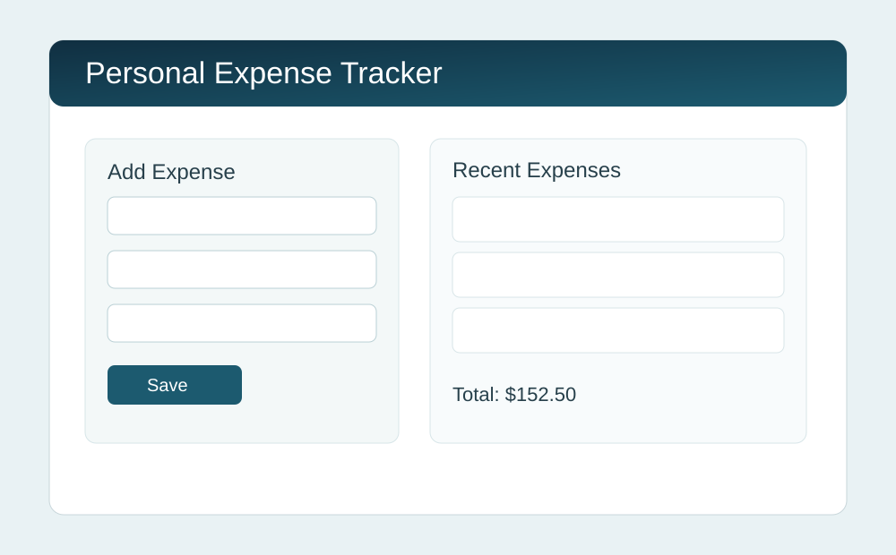
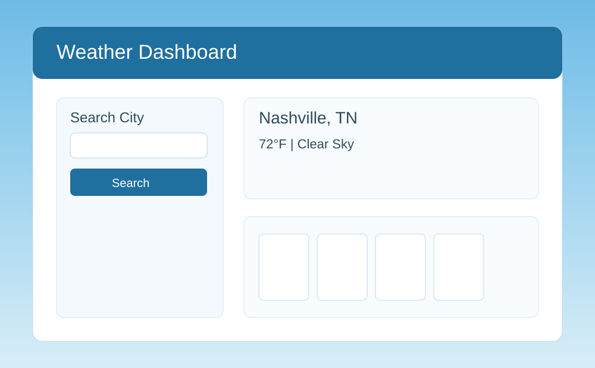
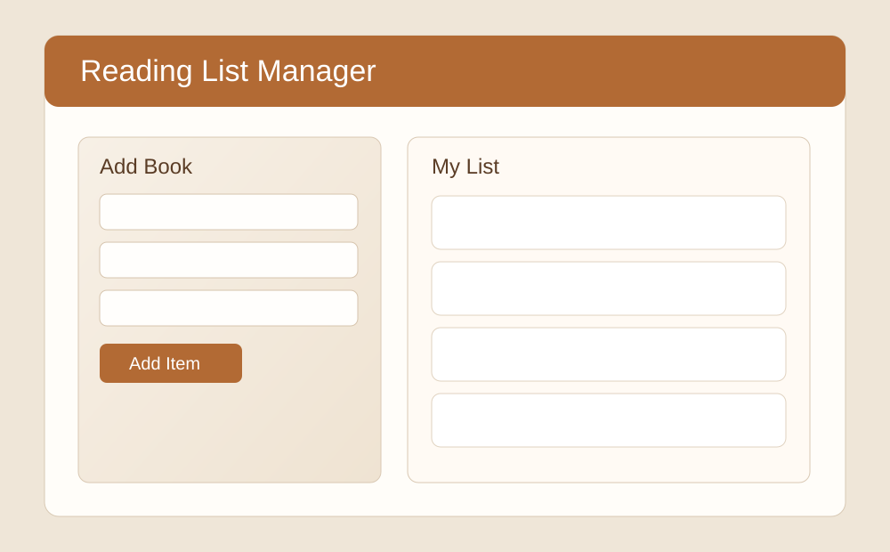

Project Manager Tracking Workspace
Use this workspace to register client-assessed tools, verify SLA and KPI performance,
and track internal delivery risk with a single operational record.

SLA Monitor Engine
Description: Tracks contractual SLA targets against actual service performance for each client-tool combination.
Technologies Used: HTML, CSS, JavaScript, client-side rules engine
GitHub Link: View Repository
Lessons Learned: SLA compliance is more actionable when thresholds and risk labels are visible in one table.

KPI Attainment Analyzer
Description: Measures KPI target achievement and highlights accounts that need immediate intervention.
Technologies Used: JavaScript calculations, status rendering, responsive data views
GitHub Link: View Repository
Lessons Learned: Managers need both percentages and simple met/not met status to drive decisions quickly.

Internal Delivery Pulse
Description: Converts SLA, KPI, and assessment inputs into low/medium/high risk labels for internal tracking.
Technologies Used: Local storage persistence, dynamic table rendering, risk scoring logic
GitHub Link: View Repository
Lessons Learned: Persistent records support weekly governance reviews and historical trend conversations.
Client Tool Assessment Tracker
Add a record to evaluate SLA/KPI health and monitor internal risk.
Internal Tracking Board
| Client |
Tool |
Owner |
Assessed |
SLA |
KPI |
Risk |
Review |
No records added yet. Add your first client entry above.